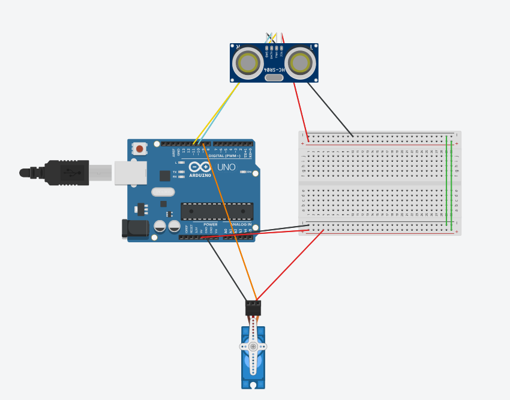

Figura 1 — Circuito con Arduino UNO, sensor de distancia HC-SR04 y servo motor. El servo gira según la distancia detectada por el sensor.
En esta imagen se muestra un circuito que combina tres componentes principales conectados a un Arduino UNO:
El Arduino envía un pulso al pin TRIG del HC-SR04. El sensor emite una onda ultrasónica y espera el rebote en el pin ECHO. Con el tiempo que tarda el eco, el Arduino calcula la distancia. Según ese valor, envía una señal PWM al servo para girarlo proporcionalmente: objeto cerca → el servo gira a un ángulo menor; objeto lejos → el servo gira más. Es la base de sistemas de radar, puertas automáticas y robots de evitación de obstáculos.
| Componente | Cantidad | Función |
|---|---|---|
| Arduino UNO | 1 | Microcontrolador principal; procesa datos y controla el servo |
| Sensor HC-SR04 | 1 | Mide distancia por ultrasonido (2 cm – 400 cm) |
| Servo motor SG90 | 1 | Gira de 0° a 180° según la distancia detectada |
| Protoboard (breadboard) | 1 | Distribuye la alimentación y organiza las conexiones |
| Cables Dupont (M-M / M-H) | ~10 | Conectan el Arduino, sensor y servo a la protoboard |
| Cable USB tipo B | 1 | Alimenta y programa el Arduino desde la computadora |
• HC-SR04 VCC → 5V del Arduino | HC-SR04 GND → GND
• HC-SR04 TRIG → Pin digital (ej. D9) | HC-SR04 ECHO → Pin digital (ej. D10)
• Servo señal → Pin PWM del Arduino (ej. D6) | Servo VCC → 5V | Servo GND → GND
Para programar este circuito en Arduino, la lógica es la siguiente:
#include <Servo.h> para controlar el servo motor fácilmente.OUTPUT e INPUT respectivamente.loop(), se envía un pulso de 10 microsegundos al pin TRIG con digitalWrite().pulseIn(echoPin, HIGH) y se convierte a centímetros dividiendo entre 58.map(distancia, 2, 200, 0, 180) se convierte la distancia a un ángulo de 0° a 180°.servo.write(angulo) mueve el servo a la posición calculada.La combinación de un sensor ultrasónico con un servo motor es la base de proyectos como radares caseros, brazos robóticos reactivos, puertas automáticas y sistemas de evitación de obstáculos. Conecta conceptos de programación, electrónica, física del sonido y mecánica en un solo proyecto.